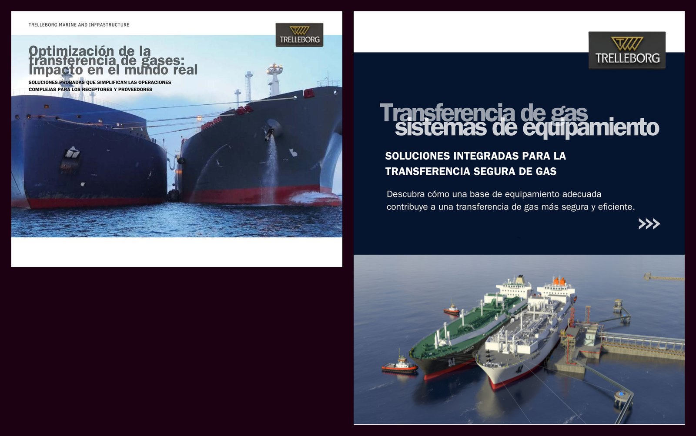
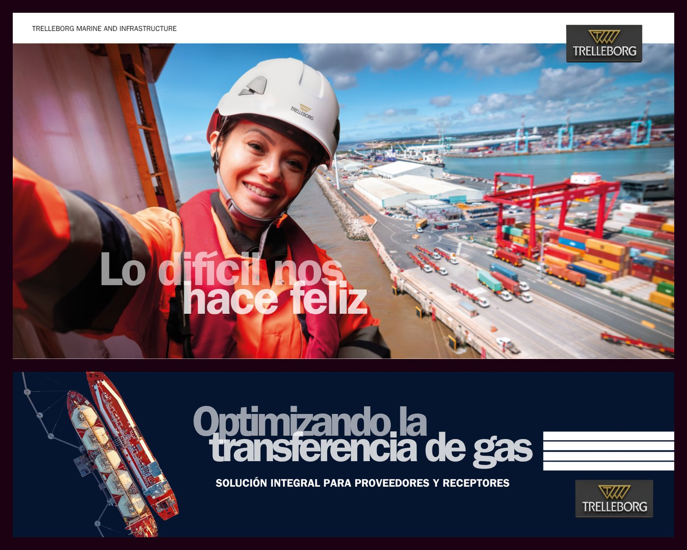
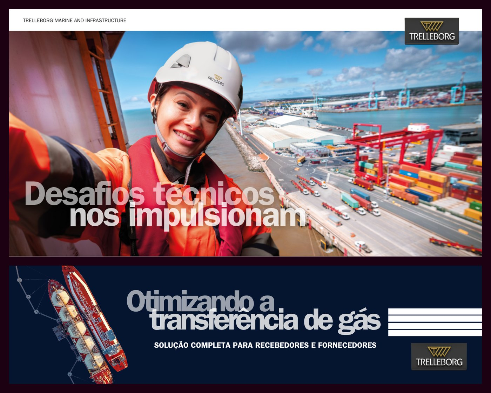

A go-to-market programme for five Latin American markets
Brazil, Chile, Peru, Colombia and Mexico. No local sales team, two languages, four product lines, and a network of agents with nothing of ours to sell with.
Trelleborg Marine & Infrastructure sells fenders, mooring and docking equipment, gas transfer technology and navigation systems into ports, terminals and shipyards. In our core regions that runs through direct sales teams. In Latin America it runs through agents.
Agents carry several manufacturers' products. They put their time into whichever line is easiest to sell: the clearest story, the material already in the right language, the quickest answer to a technical question. So we were competing for their attention as well as for the end customer's.
Demand in the region was there. Port expansion and terminal upgrades were active across all five markets. We had no structured way to reach any of it.
Research first, assets second
The quicker version of this project is to translate the English collateral, send it to the agents and call it a regional programme. In my experience that tends to produce material the agents never quite get round to using.
I argued for treating it as a market entry instead: work out who the buyer is in each market, what the competitive set looks like and what the agent needs on a site visit, then produce the material. That costs more time up front, and it needed a case made to people who wanted to start with assets.
The argument that landed was about agent behaviour rather than marketing theory. If an agent has to adapt our material themselves, most won't — they'll put their time into a line that is easier to sell. Everything after that followed from it.
Six components, in order
-
Competitive analysis across the five markets
Who else sells into these ports, at what positioning and with what claims. This set the limits on messaging: where we could compete on specification, where we had to compete on service and lead time, and where we shouldn't compete.
-
Segment messaging
Port authorities, terminal operators, EPC contractors and shipyards buy for different reasons. Each got its own positioning against the products relevant to it, rather than one regional message.
-
Spanish and Portuguese assets
Written as originals rather than translations, and reviewed by people who sell in those markets. Terminology for mooring hardware and fender specification doesn't survive machine translation.
-
Paid media on LinkedIn and Google Display
Staged campaigns by market and segment. Display carried the reach in markets where LinkedIn use among port engineers is lower than it is in Europe or Asia.
-
Eloqua nurture flows
Automated sequences by segment, in language, with defined handover points to the agent for that market, so a lead generated in Chile doesn't sit in an inbox until someone in another time zone picks it up.
-
Trade PR and agent enablement
Placements in the regional maritime and port trade press, plus the toolkit itself: segment one-pagers, specification summaries, objection handling and campaign assets the agents can run locally without asking us.

Campaign assets for the region
Part of the asset set produced for Latin America.
Replace with the segment one-pagers or specification summaries if you would rather lead with the enablement material itself.
Save as images/01-latam-toolkit.jpg · 1600×1000 or wider · JPG or PNG

Spanish campaign creative
One of the LinkedIn or Display units as it ran in Spanish.
Screenshot from Campaign Manager preview or the exported asset.
Save as images/02-latam-creative-es.jpg · 1200×1200 · JPG

Brazilian Portuguese creative
The equivalent unit as it ran in Brazil.
Same source. Showing the two together makes the localisation point without a caption.
Save as images/03-latam-creative-pt.jpg · 1200×1200 · JPG
Coordination
The programme touched regional sales, agents in five countries, product managers across four lines, external translation and PR, and a marketing automation platform owned by another team. There was no single reporting line between any of them.
Most of the work was sequencing: getting the competitive picture signed off before messaging started, messaging signed off before assets were commissioned, and involving the agents early enough that the toolkit matched what they had actually asked for.
Live across all five markets. It's the first structured go-to-market the business has run in the region, and the six-component sequence can be reused for another region without starting from scratch.
The regional awareness campaign has delivered close to 900,000 impressions at the lowest cost per thousand of any campaign on the account, running English and Spanish-language video creative. Commercial results are still building and are confidential.
What I'd do differently
Involve the agents at the competitive analysis stage rather than at enablement. They already knew most of what the research found, and bringing them in earlier would have produced better intelligence and more buy-in for the result.
02 Two years of full-funnel paid social on LinkedIn →
Eight campaigns, budget allocated by funnel stage rather than by product line.